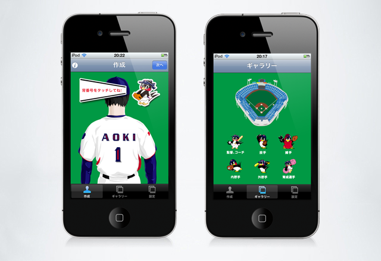

つばメンバー - iPhone APP
東京ヤクルトスワローズ背番号風のtwitterアイコンが作れるアプリが登場!
「つばメンバー」は、東京ヤクルトスワローズ公認アプリです。
自分のtwitterアイコンを手軽に東京ヤクルトスワローズユニフォーム背番号風に変える事ができます。
twitterアイコンをこのアイコンに変えれば、フォロワーにもスワローズファンである事が一目瞭然。
新しいスワローズファンのフォロワーが増えるかも!
[遊び方]
- 1.
- 四角で囲んであるエリアをタッチして名前と好きな背番号を入力してください。好きな選手の背番号が解らない時はギャラリーを参照してください。
※名前入力は、長過ぎる場合は警告が出ます。また、アルファベット以外の文字は入力しても無効になります。 - 2.
- アイコン作成が済んだら右上の「次へ」ボタンをタッチしてtwitterアカウントの設定を行ってください。設定時に球団広報や燕太郎などのtwitterアカウントフォローの設定も同時に行えます。
※Xauthを使っていますので、ユーザー名とパスワードをローカルに保存しません。 - 3.
- twitterの設定が完了し、変更したいアイコンを確認したら「変更する」ボタンをタッチしてください。twitterアイコンが変更されます。(「変更する」ボタンをタッチすると同時にアイコン画像が自動的にカメラロールに保存されます)